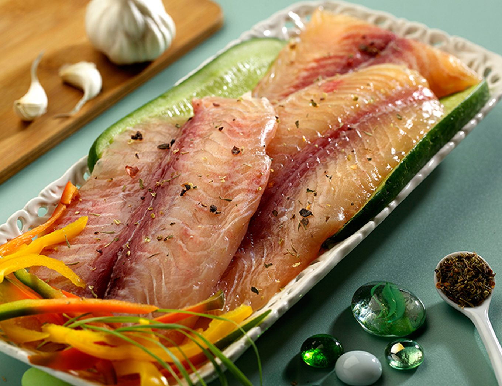
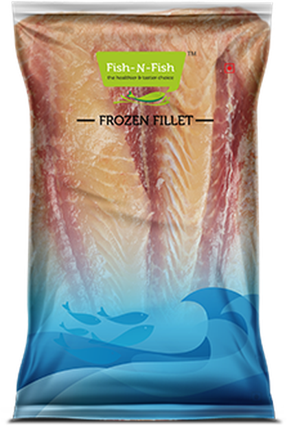
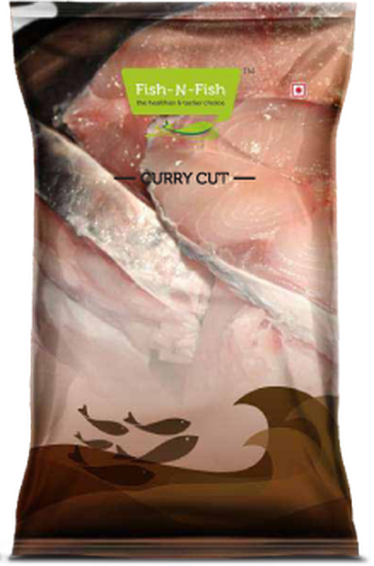

Mulpuri Aqua Processors · Vijayawada, India
Boneless fish,live to the line.
Our fish is raised by associated farmers on controlled ponds and reaches the line alive — no ice on the way in, because it does not need any. The cold chain starts the moment it is processed, and from there it never breaks.

Live intake / then an unbroken cold chain to the shelf
100+ distributors nationwide
Of controlled ponds, farmed by associated growers to our feed and water protocol.
The temperature the fish itself is held at through processing — the cold chain starts on the line, not at dispatch.
Wholesale, retail and HoReCa partners carrying the brand across the country.
Invoiced in the last twelve months, across 21 states and union territories.
The chain
Live to the line, then cold all the way.
Most fish loses its quality in the gaps. We close the first one by bringing the fish in alive — there is nothing to keep cold yet, and nothing has started to age. Every gap after processing is a cold one, and we own all of them: our own stores, our own trucks, right through to your shelf.
Controlled farms
Fish raised by associated farmers across 2,000 acres of controlled ponds, under Mulpuri’s feed, water and health protocols.
2,000 ACRESHarvested live
Only live fish enters the fillet line. Nothing is bought in dead, iced, or from an unknown pond.
LIVE INTAKEFilleted & trimmed
Deboned and well-trimmed in India’s first fresh aqua processing unit, built to international standards. The fish is held between 0 and 4°C throughout — this is where the cold chain begins.
0–4°C ON THE LINEVacuum shrink packed
Cryovac® vacuum shrink on MULTIVAC systems — pack integrity, improved hygiene, longer life.
CRYOVAC® / MULTIVACCold storage
Held at −18°C in our own extensive chain of cold stores against the dispatch plan, never left at room temperature.
−18°C HOLDINGRefrigerated fleet
Moved at −20°C on our own high-end refrigerated vehicles to 51 towns across 21 states and union territories.
−20°C IN TRANSITYour shelf
Delivered to wholesale, HoReCa and retail partners with the lot traceable back to the pond.
100+ DISTRIBUTORSThe range
Three cuts. Two frozen, one chilled.
Every pack is the same fish and the same chain — the difference is how it arrives and what you are cooking. The fillets are deboned and trimmed; the curry cut is bone-in, the way the gravy wants it.

Frozen Fillet
The wise choice for the health conscious — high in protein, low in fat and calories, ready when you are.
Frozen / Boneless / 2-year shelf life

Curry Cut Frozen
The same bone-in curry steaks, frozen — two years of shelf life and no delivery cycle to keep up with.
Frozen / Bone-in / 2-year shelf life

Premium Fresh Fillet
Our best cut, fit for tandoor and tikka. A rich source of omega-3 — good for the heart and the brain.
Chilled / Boneless / 100% halal
For distributors, retail & HoReCa
Fishing fortune
for vendors.
Distributors and vendors are an integral part of our product. We are actively expanding the network, and we bring the cold chain with us — our own cold stores, our own refrigerated vehicles, and packaging we can customise to your shelf. Tell us your state and volume and we will come back with terms.
In the kitchen
Straight from the pack to the pan.
Eight recipes built around the cuts, from the Andhra classics to a Friday night fish and chips.

Fish Pulusu
Fish in tamarind curry sauce
Suggested cut — Curry Cut Frozen
Fish Moilee
Fish in coconut milk
Suggested cut — Curry Cut Frozen
Bengali Fish Curry
Mustard, coconut and green chilli
Suggested cut — Curry Cut FrozenTalk to us
Every state has a direct line.
Eight regional numbers, one head office in Vijayawada, and someone who knows your market on the end of each.